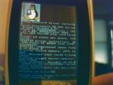
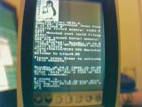
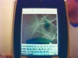

| Home | Forum | Dummies | Developers | Hackers | Contact |
|
Dummies :: Overview
Contributed by Baal (baal@megaoctet.net)
  
Linux can now boot on a BE-300 but it is still far from being usable as
a replacement for whatever is actually running on your BE. I am writing this
text with the hope of convincing more hackers to join our project. If you need
help using these instructions, please
email
me instead of disturbing the gurus. ;)
You are installing Linux on your BE at your own risk! The members of
the Linux4BE developement team cannot be held liables for any problems
occuring from the use of our software. We recommend that you do not install
Linux directly on your Nand Disk and that you backup any critical data before
installing to your CF card. Now that this has been said, you have to know that
CyaCE boots the kernel which includes a ramdisk into RAM and that Linux4BE is
not yet able to acces your CF card or Nand Disk, so there is not much risk that
it will trash any of your data...
You can download Linux4BE either as a
tarball
or a
zip
archive.
To extract the tarball do the following:
To extract the zip archive do the following:
This will create a directory named Linux4BE that you need to copy to your CF
card.
Now that you have the Linux4BE on your CF card, all you have to do is to go in
the Linux4BE directory and double-tap Autorun.exe. This will bring up a window
asking what kernel configuration you want to load. The default choice,
linux4be, will boot Linux, lead you to a command prompt, and let you type
commands with the hardware buttons using the driver antagonitz wrote. See
using it
section for more details...
The second choice, picogui, will boot the
PicoGUI
which is yet unusable since the touchscreen does not work but still cool to see!
The third choice is linux4be-serial which should allow you to use your BE in
conjunction with a serial connection but I do not know how this works since I
do
not own such a cable.
More information on how to configure CyaCE can be found in
Appendix #2
but you should not need to do this.
Typing commands is quite easy, here is how to do it: you input characters by
using a combination of the rocket button and the keypad. First, press the ok
button so you get a shell prompt. To enter text, press and hold the rocket
button and then up or down on the keypad to choose the character you want to
input while holding the rocket button. When you have chosen your first
character press "rocket + right" on the keypad to move to the next
character. Here are the exact mapings for the BE's hardware buttons:
I will not go into details about using PicoGUI since it is not yet functional
nor will I explain how to use the serial driver since I do not know how to do
it.
Well this is all I had to say, happy hacking with your BE300 and do not forget
to join our team if you think you could be usefull in anyway... You might also
want to check Appendix #1 for how to boot your kernel
automatically.
If you want the bootloader to be executed when you insert your CF card then
rename the Linux4BE folder as "R4100", then create a folder named "CE" and put
the "R4100" folder inside the "CE" folder.
You only need to read this if you want to change the default kernel or add
your own one!
First of all, you have to know that any line beginning with a # is a
comment: it is not used by CyaCE. The first important line in cyacfg.txt is
the timeout line. It is set to 300 seconds (5 minutes) so you have more time
then you need to choose which kernel you want to boot.
A CyaCE entry is made of two or three lines:
The default choice for CyaCE is the first one in the list so if you wanted to
use PicoGUI by default you would move the two lines concerning picogui at the
beginning of the file. You could also comment the two lines for the kernel with the input driver but that would disable it.
If you wanted to add your a new kernel image named new_vmlinux then you would
add the following lines in your cyacfg.txt:
Contributed by Baal (baal@megaoctet.net) |